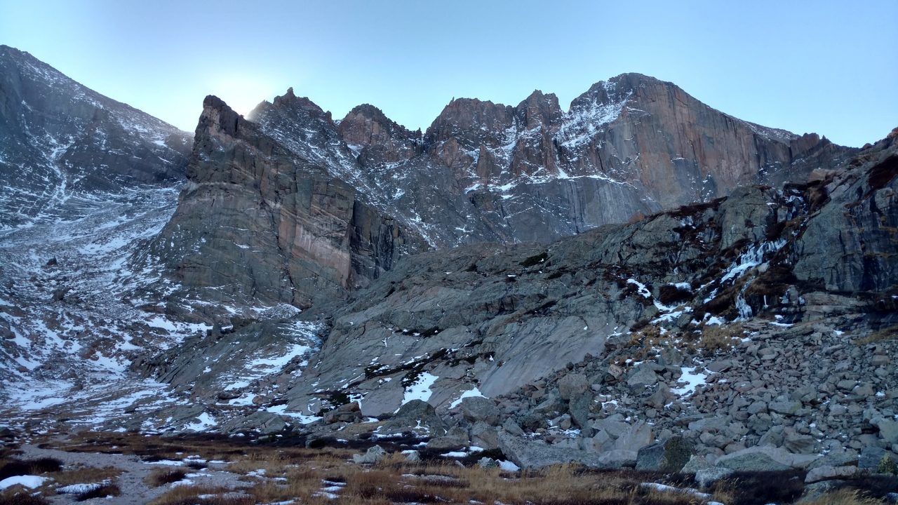

The long game
More than an apple a day
Some of the perks of regular exercise are obvious, and some are more subtle. Being able to do more with less effort, boosted self-esteem, and a generally longer life are probably a given. But I want to get into some ways that my life has been improved that likely don't come immediately to mind.
Take in the beauty of life
It is a special day when you can break away from all the routine obligations and concerns to just be in the outdoors with the ones you love. The shared reward at the end of a hike, which is most often a spectacular view of awe inspiring scenery, brings you together. The drive and the hike itself is a chance to take time and talk about your lives in a way that you don't usually get the chance to. These kinds of days are some of my most fond memories.
Separate yourself from stressors
In my family (growing up and as a father) hiking has been a sort of staple for bonding activities. It takes planning and time to get out and do, but it isn't nearly as enjoyable if you aren't physically prepared. But if you are prepared, it is a chance to break away from the numerous demands on your attention which compete for your time on a daily basis.